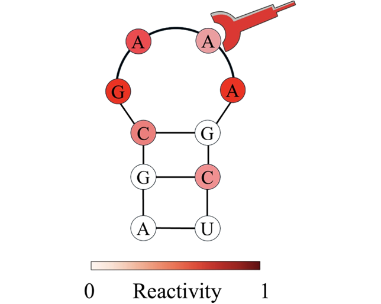
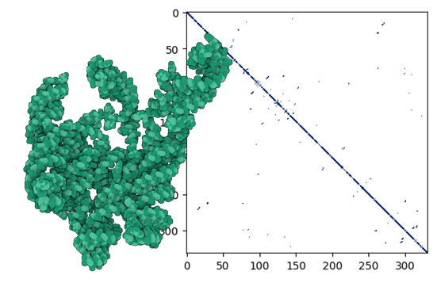

RNA Structure Tasks Performance
RNA sequences determine structures. This panel outlines tasks for inferring RNA structure from one-dimensional (1D) sequence, including secondary structure prediction for base-pairing likelihood, chemical reactivity prediction for structural dynamics and nucleotide accessibility, and contact map prediction for spatial interactions essential to three-dimensional topology. Together, these tasks establish a sub-framework for understanding the structural diversity of RNA across families. Results are reported as the mean ± standard deviation across three independent runs using different random seeds.
(1) Secondary Structure Prediction 
Secondary Structure Prediction (SSP) is formulated as a binary-classification problem in which the model
predicts the pairing state \(y_i \in \{0,1\}\) of each nucleotide \(x_i\) in an RNA sequence, thereby capturing its
base-pairing pattern. The benchmark comprises three independent datasets—bpRNA,SetA, and SetB—each split into
two evaluation subsets: an intra-family split (training and test sequences drawn from the same RNA family) and an
inter-family split (training and test sequences drawn from different RNA families).
| Model (Module) | bpRNA | Set A | Set B | |||||||||||||||
|---|---|---|---|---|---|---|---|---|---|---|---|---|---|---|---|---|---|---|
| PrecisionIntra-Family | RecallIntra-Family | F1Intra-Family | PrecisionInter-Family | RecallInter-Family | F1Inter-Family | PrecisionIntra-Family | RecallIntra-Family | F1Intra-Family | PrecisionInter-Family | RecallInter-Family | F1Inter-Family | PrecisionIntra-Family | RecallIntra-Family | F1Intra-Family | PrecisionInter-Family | RecallInter-Family | F1Inter-Family | |
| One-hot | 0.465 ± 0.008 | 0.668 ± 0.021 | 0.548 ± 0.003 | 0.399 ± 0.002 | 0.608 ± 0.022 | 0.482 ± 0.006 | 0.630 ± 0.023 | 0.763 ± 0.050 | 0.689 ± 0.007 | 0.278 ± 0.010 | 0.455 ± 0.073 | 0.343 ± 0.014 | 0.438 ± 0.022 | 0.320 ± 0.021 | 0.369 ± 0.008 | 0.605 ± 0.008 | 0.442 ± 0.035 | 0.510 ± 0.021 |
| Dense | 0.433 ± 0.015 | 0.763 ± 0.039 | 0.552 ± 0.002 | 0.387 ± 0.006 | 0.712 ± 0.047 | 0.501 ± 0.007 | 0.628 ± 0.013 | 0.777 ± 0.029 | 0.695 ± 0.005 | 0.277 ± 0.006 | 0.472 ± 0.047 | 0.348 ± 0.010 | 0.435 ± 0.027 | 0.346 ± 0.022 | 0.384 ± 0.006 | 0.600 ± 0.007 | 0.469 ± 0.044 | 0.526 ± 0.027 |
| RNABERT (MLP) | 0.551 ± 0.003 | 0.551 ± 0.007 | 0.551 ± 0.004 | 0.517 ± 0.000 | 0.567 ± 0.007 | 0.541 ± 0.003 | 0.614 ± 0.000 | 0.814 ± 0.002 | 0.700 ± 0.001 | 0.488 ± 0.000 | 0.803 ± 0.000 | 0.607 ± 0.000 | 0.525 ± 0.001 | 0.512 ± 0.004 | 0.518 ± 0.002 | 0.649 ± 0.001 | 0.440 ± 0.005 | 0.524 ± 0.004 |
| RNA-FM (MLP) | 0.747 ± 0.001 | 0.788 ± 0.007 | 0.766 ± 0.004 | 0.563 ± 0.003 | 0.661 ± 0.008 | 0.608 ± 0.002 | 0.810 ± 0.002 | 0.867 ± 0.004 | 0.837 ± 0.001 | 0.657 ± 0.009 | 0.716 ± 0.009 | 0.685 ± 0.001 | 0.867 ± 0.002 | 0.871 ± 0.002 | 0.869 ± 0.000 | 0.699 ± 0.005 | 0.533 ± 0.011 | 0.605 ± 0.006 |
| 3UTRBERT (MLP) | 0.600 ± 0.008 | 0.702 ± 0.022 | 0.647 ± 0.012 | 0.529 ± 0.006 | 0.686 ± 0.017 | 0.597 ± 0.003 | 0.683 ± 0.009 | 0.822 ± 0.006 | 0.746 ± 0.004 | 0.500 ± 0.002 | 0.743 ± 0.016 | 0.598 ± 0.004 | 0.670 ± 0.005 | 0.676 ± 0.014 | 0.673 ± 0.005 | 0.616 ± 0.003 | 0.483 ± 0.014 | 0.512 ± 0.009 |
| SpliceRBERT (MLP) | 0.613 ± 0.018 | 0.696 ± 0.040 | 0.651 ± 0.024 | 0.533 ± 0.007 | 0.652 ± 0.034 | 0.586 ± 0.011 | 0.708 ± 0.019 | 0.822 ± 0.023 | 0.760 ± 0.001 | 0.496 ± 0.005 | 0.718 ± 0.039 | 0.587 ± 0.010 | 0.723 ± 0.010 | 0.712 ± 0.018 | 0.717 ± 0.005 | 0.615 ± 0.003 | 0.495 ± 0.036 | 0.548 ± 0.022 |
| UTR-LM (MLP) | 0.599 ± 0.014 | 0.646 ± 0.015 | 0.621 ± 0.007 | 0.543 ± 0.004 | 0.634 ± 0.018 | 0.585 ± 0.005 | 0.671 ± 0.007 | 0.785 ± 0.010 | 0.723 ± 0.005 | 0.505 ± 0.002 | 0.729 ± 0.014 | 0.597 ± 0.005 | 0.639 ± 0.014 | 0.669 ± 0.034 | 0.653 ± 0.016 | 0.626 ± 0.007 | 0.499 ± 0.030 | 0.555 ± 0.017 |
| RiNALMo (MLP) | 0.781 ± 0.006 | 0.814 ± 0.009 | 0.797 ± 0.004 | 0.575 ± 0.007 | 0.683 ± 0.016 | 0.625 ± 0.006 | 0.871 ± 0.004 | 0.892 ± 0.007 | 0.881 ± 0.002 | 0.675 ± 0.008 | 0.756 ± 0.010 | 0.713 ± 0.003 | 0.887 ± 0.011 | 0.901 ± 0.007 | 0.894 ± 0.003 | 0.789 ± 0.004 | 0.673 ± 0.013 | 0.726 ± 0.006 |
| RNABERT (CNN) | 0.587 ± 0.004 | 0.610 ± 0.011 | 0.598 ± 0.003 | 0.542 ± 0.002 | 0.603 ± 0.013 | 0.571 ± 0.005 | 0.652 ± 0.010 | 0.746 ± 0.018 | 0.696 ± 0.003 | 0.507 ± 0.004 | 0.730 ± 0.031 | 0.599 ± 0.010 | 0.548 ± 0.005 | 0.606 ± 0.023 | 0.575 ± 0.008 | 0.588 ± 0.002 | 0.537 ± 0.028 | 0.561 ± 0.015 |
| RNA-FM (CNN) | 0.763 ± 0.009 | 0.812 ± 0.012 | 0.786 ± 0.001 | 0.541 ± 0.007 | 0.650 ± 0.015 | 0.590 ± 0.005 | 0.813 ± 0.006 | 0.847 ± 0.009 | 0.842 ± 0.001 | 0.649 ± 0.020 | 0.727 ± 0.016 | 0.685 ± 0.005 | 0.879 ± 0.015 | 0.870 ± 0.014 | 0.874 ± 0.001 | 0.682 ± 0.012 | 0.489 ± 0.017 | 0.569 ± 0.007 |
| 3UTRBERT (CNN) | 0.612 ± 0.015 | 0.748 ± 0.019 | 0.672 ± 0.005 | 0.509 ± 0.011 | 0.697 ± 0.037 | 0.588 ± 0.016 | 0.700 ± 0.001 | 0.837 ± 0.006 | 0.762 ± 0.002 | 0.496 ± 0.005 | 0.733 ± 0.013 | 0.592 ± 0.008 | 0.704 ± 0.002 | 0.704 ± 0.003 | 0.704 ± 0.001 | 0.616 ± 0.003 | 0.401 ± 0.008 | 0.486 ± 0.005 |
| SpliceRBERT (CNN) | 0.634 ± 0.003 | 0.760 ± 0.011 | 0.691 ± 0.003 | 0.496 ± 0.005 | 0.656 ± 0.013 | 0.565 ± 0.004 | 0.727 ± 0.007 | 0.829 ± 0.009 | 0.774 ± 0.000 | 0.492 ± 0.003 | 0.703 ± 0.013 | 0.579 ± 0.006 | 0.730 ± 0.004 | 0.744 ± 0.020 | 0.737 ± 0.008 | 0.614 ± 0.004 | 0.441 ± 0.015 | 0.513 ± 0.011 |
| UTR-LM (CNN) | 0.618 ± 0.006 | 0.728 ± 0.012 | 0.668 ± 0.003 | 0.524 ± 0.007 | 0.688 ± 0.019 | 0.595 ± 0.007 | 0.689 ± 0.005 | 0.807 ± 0.012 | 0.743 ± 0.003 | 0.498 ± 0.002 | 0.716 ± 0.012 | 0.587 ± 0.003 | 0.709 ± 0.008 | 0.668 ± 0.005 | 0.688 ± 0.006 | 0.620 ± 0.003 | 0.400 ± 0.003 | 0.486 ± 0.003 |
| RiNALMo (CNN) | 0.785 ± 0.006 | 0.823 ± 0.007 | 0.803 ± 0.000 | 0.572 ± 0.014 | 0.643 ± 0.025 | 0.605 ± 0.006 | 0.874 ± 0.002 | 0.888 ± 0.007 | 0.881 ± 0.002 | 0.678 ± 0.003 | 0.783 ± 0.020 | 0.706 ± 0.007 | 0.908 ± 0.005 | 0.897 ± 0.002 | 0.903 ± 0.002 | 0.779 ± 0.010 | 0.650 ± 0.018 | 0.708 ± 0.008 |
| RNABERT (ResNet) | 0.593 ± 0.026 | 0.818 ± 0.058 | 0.685 ± 0.003 | 0.479 ± 0.011 | 0.730 ± 0.077 | 0.576 ± 0.015 | 0.690 ± 0.014 | 0.805 ± 0.032 | 0.743 ± 0.006 | 0.484 ± 0.004 | 0.723 ± 0.039 | 0.579 ± 0.009 | 0.705 ± 0.005 | 0.639 ± 0.009 | 0.670 ± 0.004 | 0.610 ± 0.007 | 0.393 ± 0.021 | 0.478 ± 0.013 |
| RNA-FM (ResNet) | 0.734 ± 0.008 | 0.820 ± 0.012 | 0.775 ± 0.001 | 0.540 ± 0.009 | 0.693 ± 0.016 | 0.607 ± 0.001 | 0.783 ± 0.006 | 0.861 ± 0.006 | 0.820 ± 0.001 | 0.585 ± 0.015 | 0.766 ± 0.005 | 0.663 ± 0.008 | 0.851 ± 0.017 | 0.870 ± 0.004 | 0.860 ± 0.006 | 0.665 ± 0.015 | 0.533 ± 0.045 | 0.591 ± 0.023 |
| 3UTRBERT (ResNet) | 0.597 ± 0.010 | 0.804 ± 0.036 | 0.685 ± 0.007 | 0.485 ± 0.004 | 0.713 ± 0.051 | 0.576 ± 0.015 | 0.699 ± 0.009 | 0.801 ± 0.018 | 0.746 ± 0.003 | 0.489 ± 0.006 | 0.692 ± 0.029 | 0.573 ± 0.008 | 0.706 ± 0.022 | 0.686 ± 0.034 | 0.695 ± 0.009 | 0.609 ± 0.004 | 0.422 ± 0.049 | 0.498 ± 0.032 |
| SpliceRBERT (ResNet) | 0.627 ± 0.012 | 0.781 ± 0.033 | 0.695 ± 0.006 | 0.491 ± 0.008 | 0.692 ± 0.031 | 0.574 ± 0.005 | 0.718 ± 0.020 | 0.835 ± 0.035 | 0.772 ± 0.004 | 0.486 ± 0.006 | 0.719 ± 0.056 | 0.579 ± 0.014 | 0.719 ± 0.017 | 0.706 ± 0.015 | 0.712 ± 0.003 | 0.599 ± 0.013 | 0.528 ± 0.006 | 0.561 ± 0.003 |
| UTR-LM (ResNet) | 0.625 ± 0.012 | 0.488 ± 0.028 | 0.697 ± 0.003 | 0.491 ± 0.006 | 0.676 ± 0.042 | 0.568 ± 0.012 | 0.720 ± 0.012 | 0.797 ± 0.033 | 0.756 ± 0.008 | 0.491 ± 0.005 | 0.678 ± 0.047 | 0.569 ± 0.013 | 0.738 ± 0.028 | 0.698 ± 0.043 | 0.716 ± 0.012 | 0.613 ± 0.008 | 0.387 ± 0.058 | 0.472 ± 0.042 |
| RiNALMo (ResNet) | 0.788 ± 0.014 | 0.823 ± 0.010 | 0.805 ± 0.003 | 0.573 ± 0.007 | 0.660 ± 0.036 | 0.613 ± 0.014 | 0.861 ± 0.005 | 0.903 ± 0.009 | 0.882 ± 0.002 | 0.664 ± 0.022 | 0.757 ± 0.044 | 0.707 ± 0.007 | 0.902 ± 0.015 | 0.891 ± 0.016 | 0.897 ± 0.001 | 0.773 ± 0.022 | 0.596 ± 0.035 | 0.672 ± 0.015 |
(2) Chemical Reactivity Prediction 
Chemical Reactivity Prediction (CRP) is framed as a
regression task in which the model estimates the nucleotide-wise chemical
reactivity \(y_i \in [0,1]\) for each position
\(x_i\) of an RNA molecule. Reactivity values correlate with secondary
structure: unpaired or flexible regions generally exhibit higher chemical
reactivity, whereas base-paired segments tend to be less reactive.
Accordingly, CRP captures both static base-pairing information and dynamic
conformational fluctuations The benchmark provides two Test sets—
TestS (short RNAs) and
TestL (long RNAs)—whose
ground-truth reactivities were obtained from high-throughput probing
experiments. Models are assessed by the mean absolute error
(MAE ↓) on each test set.
| Model (Module) | TestS | TestL |
|---|---|---|
| MAE ↓ | MAE ↓ | |
| One-hot | 0.179 ± 0.001 | 0.167 ± 0.002 |
| Dense | 0.176 ± 0.001 | 0.174 ± 0.002 |
| RNABERT (MLP) | 0.255 ± 0.000 | 0.266 ± 0.001 |
| RNA-FM (MLP) | 0.214 ± 0.001 | 0.187 ± 0.003 |
| 3UTRBERT (MLP) | 0.202 ± 0.001 | 0.195 ± 0.002 |
| SpliceBERT (MLP) | 0.207 ± 0.001 | 0.207 ± 0.001 |
| UTR-LM (MLP) | 0.201 ± 0.001 | 0.196 ± 0.003 |
| RiNALMo (MLP) | 0.183 ± 0.001 | 0.195 ± 0.002 |
| RNABERT (CNN) | 0.228 ± 0.001 | 0.241 ± 0.002 |
| RNA-FM (CNN) | 0.197 ± 0.003 | 0.176 ± 0.001 |
| 3UTRBERT (CNN) | 0.192 ± 0.000 | 0.182 ± 0.002 |
| SpliceBERT (CNN) | 0.196 ± 0.001 | 0.179 ± 0.002 |
| UTR-LM (CNN) | 0.191 ± 0.001 | 0.176 ± 0.007 |
| RiNALMo (CNN) | 0.173 ± 0.001 | 0.179 ± 0.002 |
| RNABERT (ResNet) | 0.181 ± 0.002 | 0.175 ± 0.003 |
| RNA-FM (ResNet) | 0.196 ± 0.004 | 0.166 ± 0.004 |
| 3UTRBERT (ResNet) | 0.187 ± 0.002 | 0.172 ± 0.004 |
| SpliceBERT (ResNet) | 0.193 ± 0.004 | 0.177 ± 0.003 |
| UTR-LM (ResNet) | 0.180 ± 0.001 | 0.171 ± 0.005 |
| RiNALMo (ResNet) | 0.163 ± 0.000 | 0.163 ± 0.004 |
(3) Contact Map Prediction 
Contact Map Prediction (CMP) is framed as a binary-classification task in which the model predicts, for every nucleotide pair \((x_i, x_j)\), whether the two residues are within 8 Å in three-dimensional space, i.e. their contact state \(y_{ij} \in \{0,1\}\). Owing to the intrinsic flexibility of RNA, accurately recovering these long-range spatial relationships remains highly challenging.
| Model (Module) | Short@L/5 | Long@L/5 |
|---|---|---|
| One-hot | 0.158 ± 0.006 | 0.168 ± 0.007 |
| Dense | 0.190 ± 0.015 | 0.170 ± 0.006 |
| RNABERT (MLP) | 0.013 ± 0.001 | 0.021 ± 0.003 |
| RNA-FM (MLP) | 0.137 ± 0.003 | 0.129 ± 0.002 |
| 3UTRBERT (MLP) | 0.103 ± 0.002 | 0.086 ± 0.003 |
| SpliceBERT (MLP) | 0.111 ± 0.002 | 0.121 ± 0.002 |
| UTR-LM (MLP) | 0.111 ± 0.001 | 0.196 ± 0.003 |
| RiNALMo (MLP) | 0.183 ± 0.001 | 0.195 ± 0.002 |
| RNABERT (CNN) | 0.228 ± 0.001 | 0.241 ± 0.002 |
| RNA-FM (CNN) | 0.197 ± 0.003 | 0.176 ± 0.001 |
| 3UTRBERT (CNN) | 0.192 ± 0.000 | 0.182 ± 0.002 |
| SpliceBERT (CNN) | 0.196 ± 0.001 | 0.179 ± 0.002 |
| UTR-LM (CNN) | 0.191 ± 0.001 | 0.176 ± 0.007 |
| RiNALMo (CNN) | 0.173 ± 0.001 | 0.179 ± 0.002 |
| RNABERT (ResNet) | 0.181 ± 0.002 | 0.175 ± 0.003 |
| RNA-FM (ResNet) | 0.196 ± 0.004 | 0.166 ± 0.004 |
| 3UTRBERT (ResNet) | 0.187 ± 0.002 | 0.172 ± 0.004 |
| SpliceBERT (ResNet) | 0.193 ± 0.004 | 0.177 ± 0.003 |
| UTR-LM (ResNet) | 0.180 ± 0.001 | 0.171 ± 0.005 |
| RiNALMo (ResNet) | 0.163 ± 0.000 | 0.163 ± 0.004 |
RNA Interaction Tasks Performance
RNA sequences determine structures. This panel outlines tasks for inferring RNA structure from one-dimensional (1D) sequence, including secondary structure prediction for base-pairing likelihood, chemical reactivity prediction for structural dynamics and nucleotide accessibility, and contact map prediction for spatial interactions essential to three-dimensional topology. Together, these tasks establish a sub-framework for understanding the structural diversity of RNA across families. Results are reported as the mean ± standard deviation across three independent runs using different random seeds.